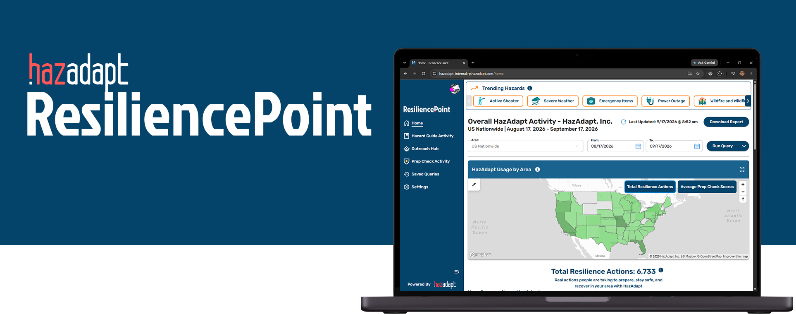
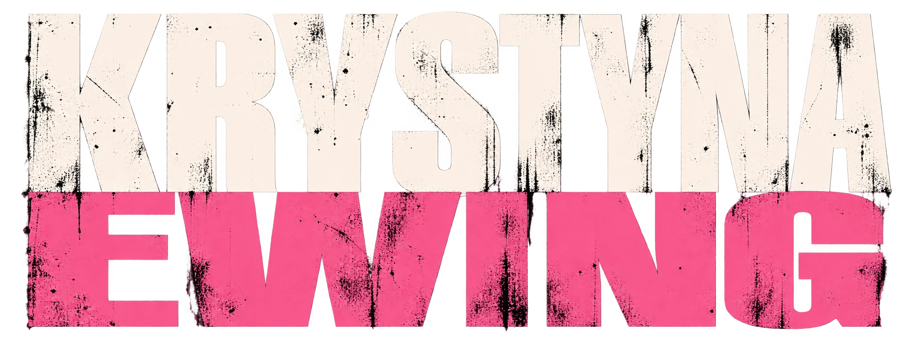

ResiliencePoint

We built what we thought people needed. Then the evidence changed the product.
Read the case study →↖ ruined me for shipping without evidence, honestly.

UX designer, creative technologist, artist & maker.
UX · Art · Technology
Beautifully unhinged
I design software, make art, build things, break things, and have a hard time leaving anything alone when I know it could work better.
Detroit-born, lifelong artist, and someone with a bad habit of needing to know how things work. That curiosity took me from software development into UX, and it still shows up in accessibility reviews, 3D printing experiments, and whatever I'm building at 1am.
Index of exhibits · 05

We built what we thought people needed. Then the evidence changed the product.
Read the case study →↖ ruined me for shipping without evidence, honestly.
Bringing trusted local safety information directly into HazAdapt's Hazard Guides.
Read the case study →Bite-sized preparedness activities people actually finish.
Read the case study →Financial tools built to protect autonomy, not just assets.
Redesigning how a nonprofit monitors remote water infrastructure, from a dense table to scannable, status-first cards.
View case study →still couldn't leave a spreadsheet alone.
About · Wall label
Detroit-born, lifelong artist, and someone with a bad habit of needing to know how things work. That curiosity took me from software development into UX, and it still shows up in accessibility reviews, 3D printing experiments, and whatever I'm building at 1am.
Want the longer version? View résumé →Email hello@krystynaewing.com — or, found something that doesn't work? Tell me.